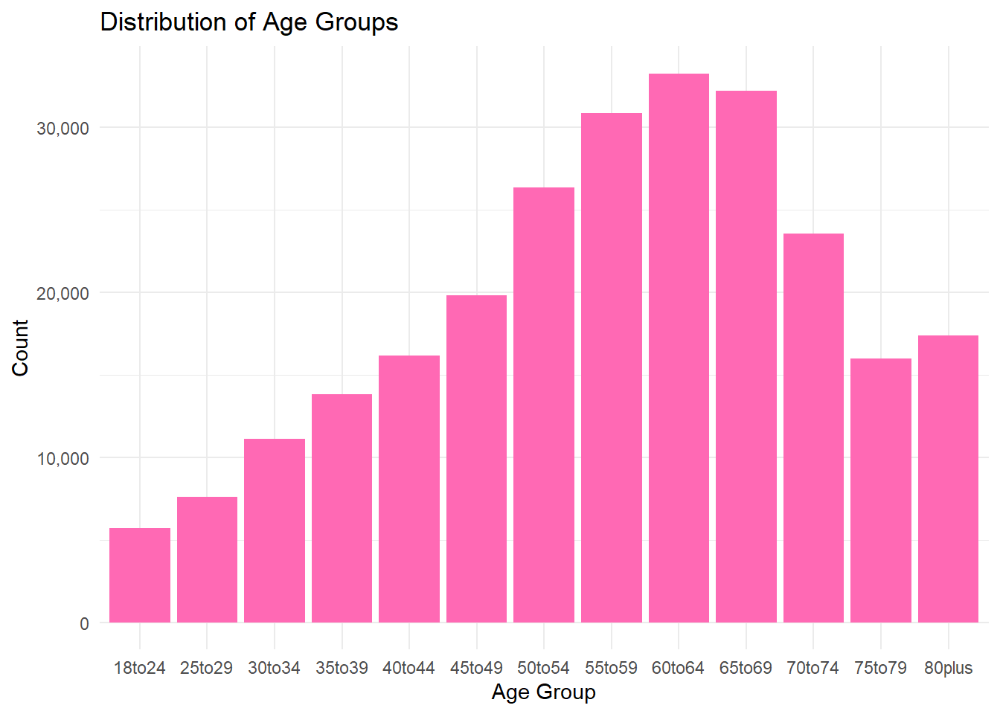
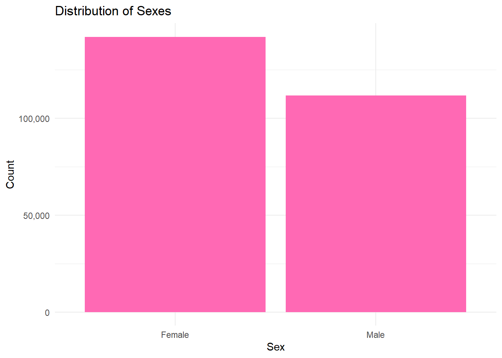
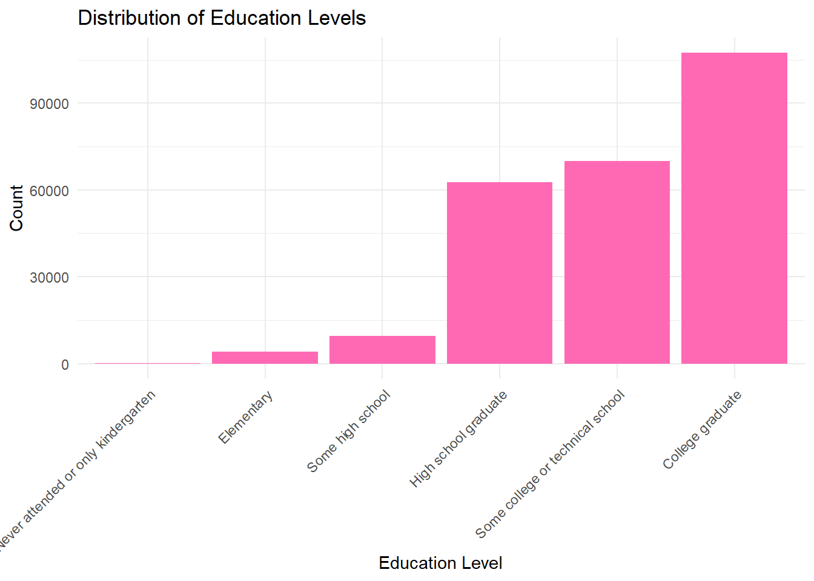
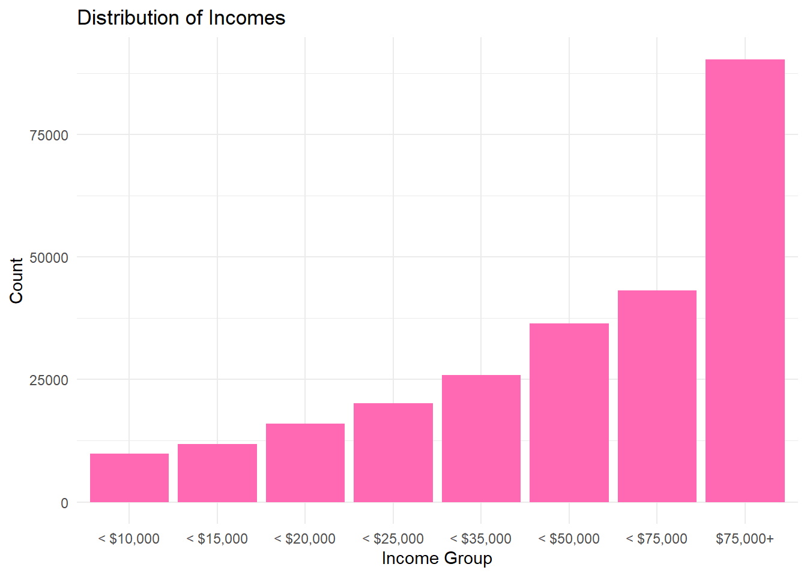
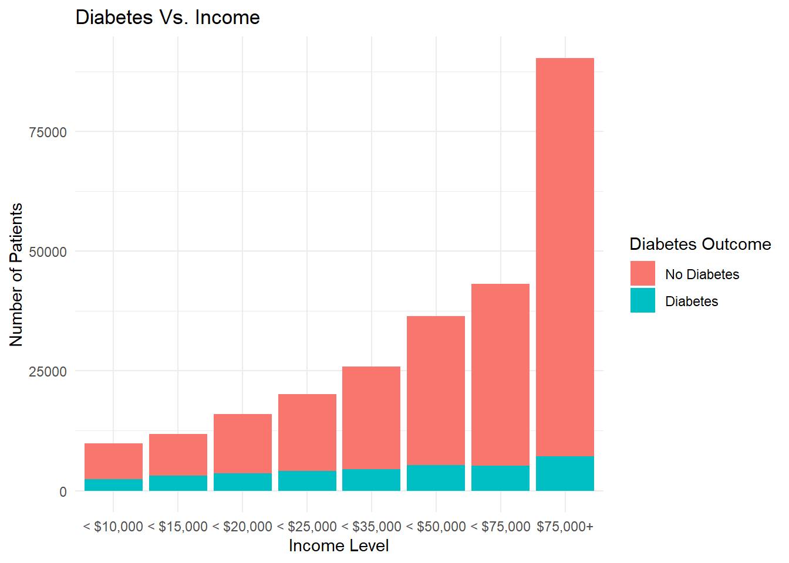

library(tidyverse)
library(ggplot2)
library(knitr)
library(scales)Project 3 EDA
Introduction:
Diabetes is a chronic illness that affects more than 36 million Americans and many more people world-wide. Diabetes is a condition where the body’s cells don’t respond to insulin properly, which leads to high blood sugar levels. It is currently understood to be irreversible and can result in a number of life altering comorbidities. Studies shows that most cases of type 2 diabetes can be prevented through lifestyle changes. As such, it is important to explore how certain indicators can be used to predict an outcome of diabetes, as that would be a useful tool to predicting patient outcomes and guiding lifestyle interventions.
With a lot of research already done on this topic, certain health measurements are more obviously correlated with outcomes of diabetes (BMI, cholesterol, eating habits); so, for this EDA I wanted to explore some less obvious predictors of diabetes. I will be looking at Age, Sex, Education level and Income level as predictors of Diabetes diagnosis.
Libraries:
Data:
Import data and change levels to meaningful names.
#read in diabetes data from folder
diabetes_data <- read_csv("diabetes_data.csv")Rows: 253680 Columns: 22
── Column specification ────────────────────────────────────────────────────────
Delimiter: ","
dbl (22): Diabetes_binary, HighBP, HighChol, CholCheck, BMI, Smoker, Stroke,...
ℹ Use `spec()` to retrieve the full column specification for this data.
ℹ Specify the column types or set `show_col_types = FALSE` to quiet this message.#now for chosen variables change each to factor and give meaningful labels for the levels
diabetes_data_reduced <- read_csv("diabetes_data.csv")%>%
mutate(Diabetes_binary = factor(Diabetes_binary, levels= c(0,1), labels=c("No Diabetes", "Diabetes")),
Sex = factor(Sex, levels= c(0,1), labels = c("Female", "Male")),
# info sheet says 5 year increments
Age = factor(Age, levels = c(1,2,3,4,5,6,7,8,9,10,11,12,13), labels = c("18to24", "25to29", "30to34", "35to39", "40to44", "45to49", "50to54", "55to59", "60to64", "65to69", "70to74", "75to79", "80plus")),
Education= factor(Education, levels= c(1,2,3,4,5,6), labels=c("Never attended or only kindergarten","Elementary","Some high school", "High school graduate","Some college or technical school","College graduate")),
Income = factor(Income, levels = c(1,2,3,4,5,6,7,8), labels = c("< $10,000","< $15,000","< $20,000","< $25,000", "< $35,000","< $50,000","< $75,000","$75,000+")))%>%
#select only relevant variables to work with smaller data set
select(Diabetes_binary, Age, Sex, Education, Income)Rows: 253680 Columns: 22
── Column specification ────────────────────────────────────────────────────────
Delimiter: ","
dbl (22): Diabetes_binary, HighBP, HighChol, CholCheck, BMI, Smoker, Stroke,...
ℹ Use `spec()` to retrieve the full column specification for this data.
ℹ Specify the column types or set `show_col_types = FALSE` to quiet this message.Univariate analyses:
Histograms for each variable:
#age
a <- ggplot(diabetes_data_reduced, aes(x=Age))
a + geom_bar(fill = "hotpink") + scale_y_continuous(labels = comma) + labs(title = "Distribution of Age Groups", x = "Age Group", y = "Count") + theme_minimal()
#sex
s <- ggplot(diabetes_data_reduced, aes(x=Sex))
s+ geom_bar(fill = "hotpink") + scale_y_continuous(labels = comma) +
labs(title = "Distribution of Sexes", x = "Sex", y = "Count") + theme_minimal()
#Education
e <- ggplot(diabetes_data_reduced, aes(x=Education))
e+ geom_bar(fill = "hotpink") + labs(title = "Distribution of Education Levels", x = "Education Level", y = "Count") +
theme_minimal()+
theme(axis.text.x = element_text(angle = 45, hjust = 1))
#Income
i <- ggplot(diabetes_data_reduced, aes(x=Income))
i+ geom_bar(fill = "hotpink") +labs(title = "Distribution of Incomes", x = "Income Group", y = "Count") +
theme_minimal()
Numeric summaries:
#age table
age_sum <- diabetes_data_reduced %>%
count(Age) %>%
mutate(Percentage = 100*(n / sum(n)))
kable(age_sum)| Age | n | Percentage |
|---|---|---|
| 18to24 | 5700 | 2.246925 |
| 25to29 | 7598 | 2.995112 |
| 30to34 | 11123 | 4.384658 |
| 35to39 | 13823 | 5.448991 |
| 40to44 | 16157 | 6.369048 |
| 45to49 | 19819 | 7.812599 |
| 50to54 | 26314 | 10.372911 |
| 55to59 | 30832 | 12.153895 |
| 60to64 | 33244 | 13.104699 |
| 65to69 | 32194 | 12.690791 |
| 70to74 | 23533 | 9.276648 |
| 75to79 | 15980 | 6.299275 |
| 80plus | 17363 | 6.844450 |
#sex table
sex_sum <- diabetes_data_reduced %>%
count(Sex) %>%
mutate(Percentage = 100*(n / sum(n)))
kable(sex_sum)| Sex | n | Percentage |
|---|---|---|
| Female | 141974 | 55.96578 |
| Male | 111706 | 44.03422 |
#income table
income_sum <- diabetes_data_reduced %>%
count(Income) %>%
mutate(Percentage = 100*(n / sum(n)))
kable(income_sum)| Income | n | Percentage |
|---|---|---|
| < $10,000 | 9811 | 3.867471 |
| < $15,000 | 11783 | 4.644828 |
| < $20,000 | 15994 | 6.304793 |
| < $25,000 | 20135 | 7.937165 |
| < $35,000 | 25883 | 10.203012 |
| < $50,000 | 36470 | 14.376380 |
| < $75,000 | 43219 | 17.036818 |
| $75,000+ | 90385 | 35.629533 |
#Education table
education_sum <- diabetes_data_reduced %>%
count(Education) %>%
mutate(Percentage = 100*(n / sum(n)))
kable(education_sum)| Education | n | Percentage |
|---|---|---|
| Never attended or only kindergarten | 174 | 0.0685904 |
| Elementary | 4043 | 1.5937401 |
| Some high school | 9478 | 3.7362031 |
| High school graduate | 62750 | 24.7358877 |
| Some college or technical school | 69910 | 27.5583412 |
| College graduate | 107325 | 42.3072375 |
Looking at the variables on their own we can see that our data set contains values for age and sex that are relatively normally distributed, with there being about 10% more females in the survey. However, both education and income look pretty left skewed. This gives us a picture of our sample data. It seems more people answering the survey have pursued a college degree (~42%) and most people answering the survey make over $75,000 (~36%).
Bivariate exploration:
Filled bar plots of variable categories vs. Diabetes outcome:
#age vs. diabetes
ggplot(diabetes_data_reduced, aes(x = Age, fill = Diabetes_binary)) +
geom_bar(stat = "count") +
labs(
title = "Diabetes Vs. Age",
x = "Age Group",
y = "Number of Patients",
fill = "Diabetes Outcome") + theme_minimal() +
theme(axis.text.x = element_text(angle = 45, hjust = 1))#sex vs. diabetes
ggplot(diabetes_data_reduced, aes(x = Sex, fill = Diabetes_binary)) +
geom_bar(stat = "count") + scale_y_continuous(labels = comma) +
labs(
title = "Diabetes Vs. Sex",
x = "Sex",
y = "Number of Patients",
fill = "Diabetes Outcome") + theme_minimal()#education vs. diabetes
ggplot(diabetes_data_reduced, aes(x = Education, fill = Diabetes_binary)) + geom_bar(stat = "count") + labs(
title = "Diabetes Vs. Education",
x = "Education Level",
y = "Number of Patients",
fill = "Diabetes Outcome") + theme_minimal() +
theme(axis.text.x = element_text(angle = 45, hjust = 1))#income vs. diabetes
ggplot(diabetes_data_reduced, aes(x = Income, fill = Diabetes_binary)) +
geom_bar(stat = "count") +labs(
title = "Diabetes Vs. Income",
x = "Income Level",
y = "Number of Patients",
fill = "Diabetes Outcome") + theme_minimal()
Bivariate Numerical Summaries:
#age vs. diabetes
age_v_diab <- diabetes_data_reduced %>%
count(Age, Diabetes_binary) %>%
group_by(Age)%>%
mutate(Percentage = 100*(n/sum(n)))%>%
ungroup()
kable(age_v_diab)| Age | Diabetes_binary | n | Percentage |
|---|---|---|---|
| 18to24 | No Diabetes | 5622 | 98.631579 |
| 18to24 | Diabetes | 78 | 1.368421 |
| 25to29 | No Diabetes | 7458 | 98.157410 |
| 25to29 | Diabetes | 140 | 1.842590 |
| 30to34 | No Diabetes | 10809 | 97.177021 |
| 30to34 | Diabetes | 314 | 2.822979 |
| 35to39 | No Diabetes | 13197 | 95.471316 |
| 35to39 | Diabetes | 626 | 4.528684 |
| 40to44 | No Diabetes | 15106 | 93.495080 |
| 40to44 | Diabetes | 1051 | 6.504920 |
| 45to49 | No Diabetes | 18077 | 91.210455 |
| 45to49 | Diabetes | 1742 | 8.789545 |
| 50to54 | No Diabetes | 23226 | 88.264802 |
| 50to54 | Diabetes | 3088 | 11.735198 |
| 55to59 | No Diabetes | 26569 | 86.173456 |
| 55to59 | Diabetes | 4263 | 13.826544 |
| 60to64 | No Diabetes | 27511 | 82.754783 |
| 60to64 | Diabetes | 5733 | 17.245217 |
| 65to69 | No Diabetes | 25636 | 79.629745 |
| 65to69 | Diabetes | 6558 | 20.370255 |
| 70to74 | No Diabetes | 18392 | 78.154082 |
| 70to74 | Diabetes | 5141 | 21.845918 |
| 75to79 | No Diabetes | 12577 | 78.704631 |
| 75to79 | Diabetes | 3403 | 21.295369 |
| 80plus | No Diabetes | 14154 | 81.518171 |
| 80plus | Diabetes | 3209 | 18.481829 |
#sex vs. diabetes
sex_v_diab <- diabetes_data_reduced %>%
count(Sex, Diabetes_binary) %>%
group_by(Sex)%>%
mutate(Percentage = 100*(n/sum(n)))%>%
ungroup()
kable(sex_v_diab)| Sex | Diabetes_binary | n | Percentage |
|---|---|---|---|
| Female | No Diabetes | 123563 | 87.03213 |
| Female | Diabetes | 18411 | 12.96787 |
| Male | No Diabetes | 94771 | 84.83967 |
| Male | Diabetes | 16935 | 15.16033 |
#income vs. diabetes
income_v_diab <- diabetes_data_reduced %>%
count(Income, Diabetes_binary) %>%
group_by(Income)%>%
mutate(Percentage = 100*(n/sum(n)))%>%
ungroup()
kable(income_v_diab)| Income | Diabetes_binary | n | Percentage |
|---|---|---|---|
| < $10,000 | No Diabetes | 7428 | 75.710937 |
| < $10,000 | Diabetes | 2383 | 24.289063 |
| < $15,000 | No Diabetes | 8697 | 73.809726 |
| < $15,000 | Diabetes | 3086 | 26.190274 |
| < $20,000 | No Diabetes | 12426 | 77.691634 |
| < $20,000 | Diabetes | 3568 | 22.308366 |
| < $25,000 | No Diabetes | 16081 | 79.865905 |
| < $25,000 | Diabetes | 4054 | 20.134095 |
| < $35,000 | No Diabetes | 21379 | 82.598617 |
| < $35,000 | Diabetes | 4504 | 17.401383 |
| < $50,000 | No Diabetes | 31179 | 85.492185 |
| < $50,000 | Diabetes | 5291 | 14.507815 |
| < $75,000 | No Diabetes | 37954 | 87.817858 |
| < $75,000 | Diabetes | 5265 | 12.182142 |
| $75,000+ | No Diabetes | 83190 | 92.039608 |
| $75,000+ | Diabetes | 7195 | 7.960392 |
#education vs. diabetes
education_v_diab <- diabetes_data_reduced %>%
count(Education, Diabetes_binary) %>%
group_by(Education)%>%
mutate(Percentage = 100*(n/sum(n)))%>%
ungroup()
kable(education_v_diab)| Education | Diabetes_binary | n | Percentage |
|---|---|---|---|
| Never attended or only kindergarten | No Diabetes | 127 | 72.988506 |
| Never attended or only kindergarten | Diabetes | 47 | 27.011494 |
| Elementary | No Diabetes | 2860 | 70.739550 |
| Elementary | Diabetes | 1183 | 29.260450 |
| Some high school | No Diabetes | 7182 | 75.775480 |
| Some high school | Diabetes | 2296 | 24.224520 |
| High school graduate | No Diabetes | 51684 | 82.364940 |
| High school graduate | Diabetes | 11066 | 17.635060 |
| Some college or technical school | No Diabetes | 59556 | 85.189529 |
| Some college or technical school | Diabetes | 10354 | 14.810471 |
| College graduate | No Diabetes | 96925 | 90.309807 |
| College graduate | Diabetes | 10400 | 9.690193 |
Looking at the levels of diabetes for each label within a variable turned out to be very interesting! Diabetes visually appears to be normally distributed across ages. At a glance, perhaps diabetes is more common in Males (about ~3% more in our observed data). The most interesting two variable I’d especially like to investigate further are education and Income. As education level increases the amount of diabetic cases appears decrease! Those who completed some high school showed about ~24% had diabetes, while of the college graduates only ~10% had diabetes. Further, the proportion of those with diabetic outcomes appears to decrease as income increases as well!
We will continue with modeling to see how levels of Education, Income, and Sex perform as predictors of Diabetic outcomes.